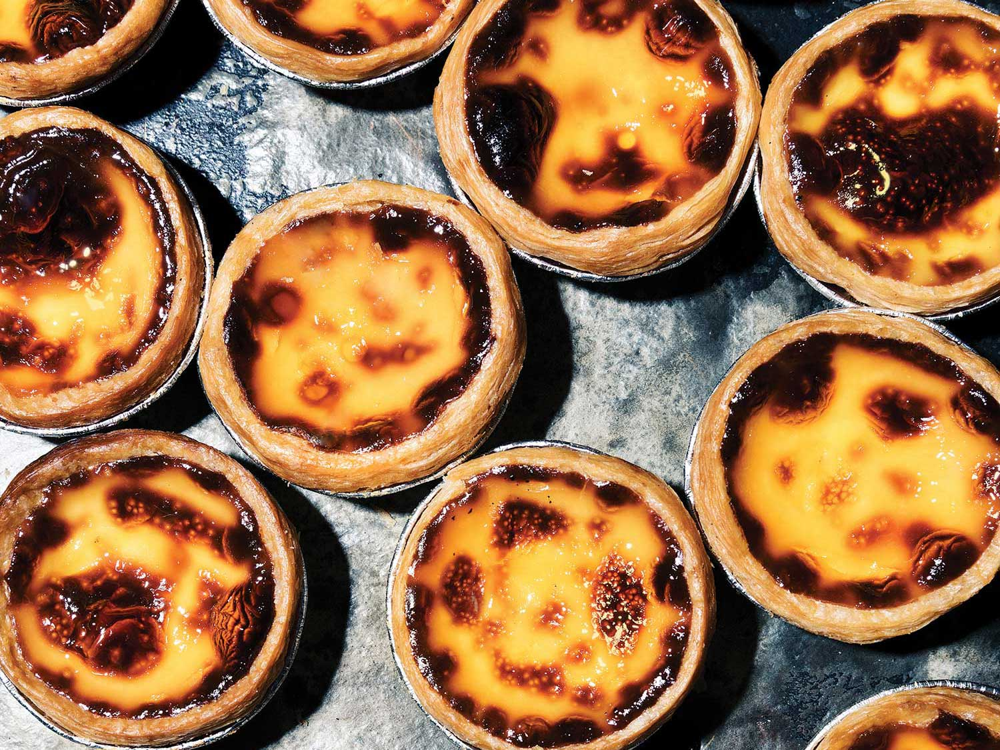

Healthy Recipes
Delicious and healthy recipe ideas...
Quick Meals
Quick and easy meals for busy days...
Desserts
Indulge in some delightful desserts...
Recipe of the Week: Po Tat (Macau-Style Portuguese Custard Tart)
Try our irresistible Po Tat, a Macau-style Portuguese Custard Tart with a crispy, flaky crust and a rich, creamy custard filling!